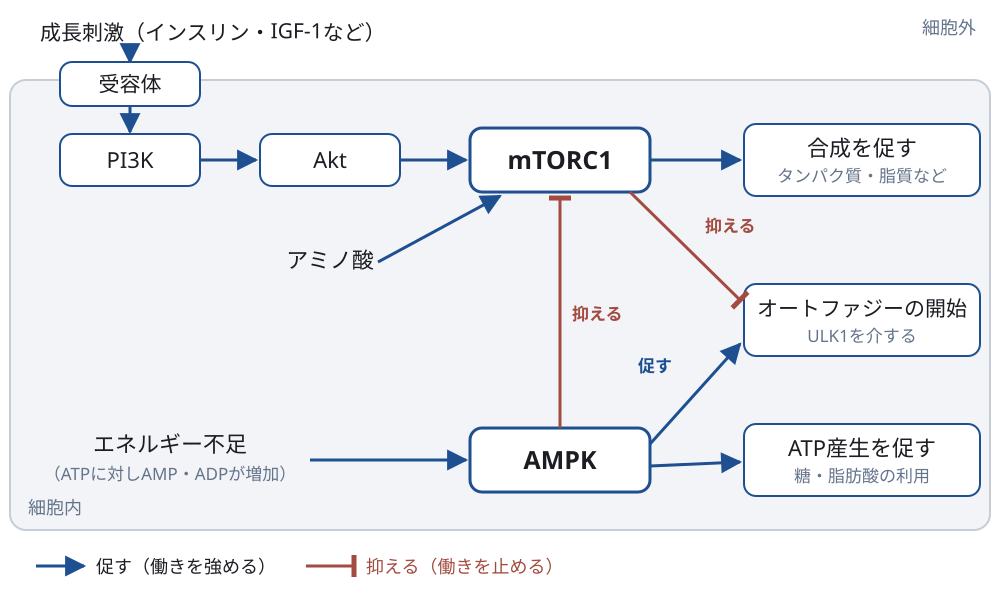
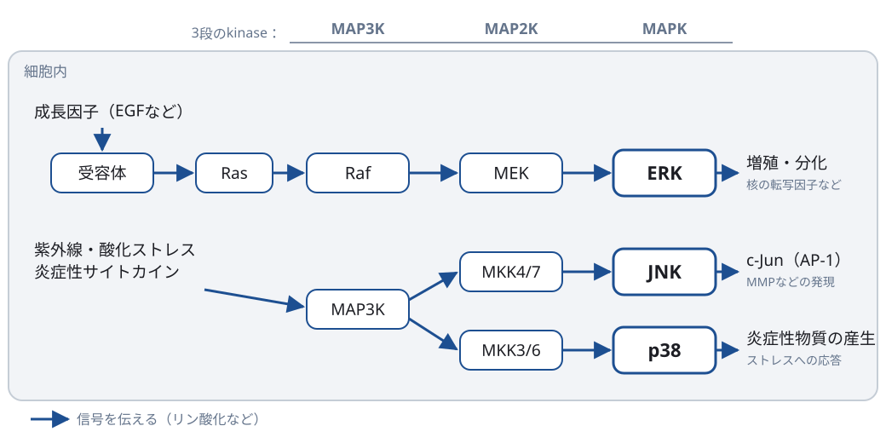
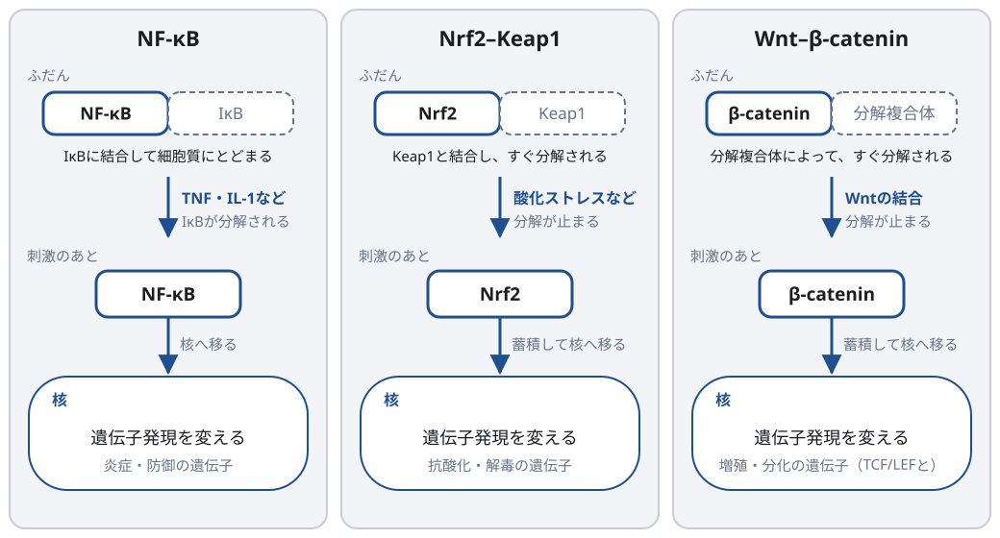
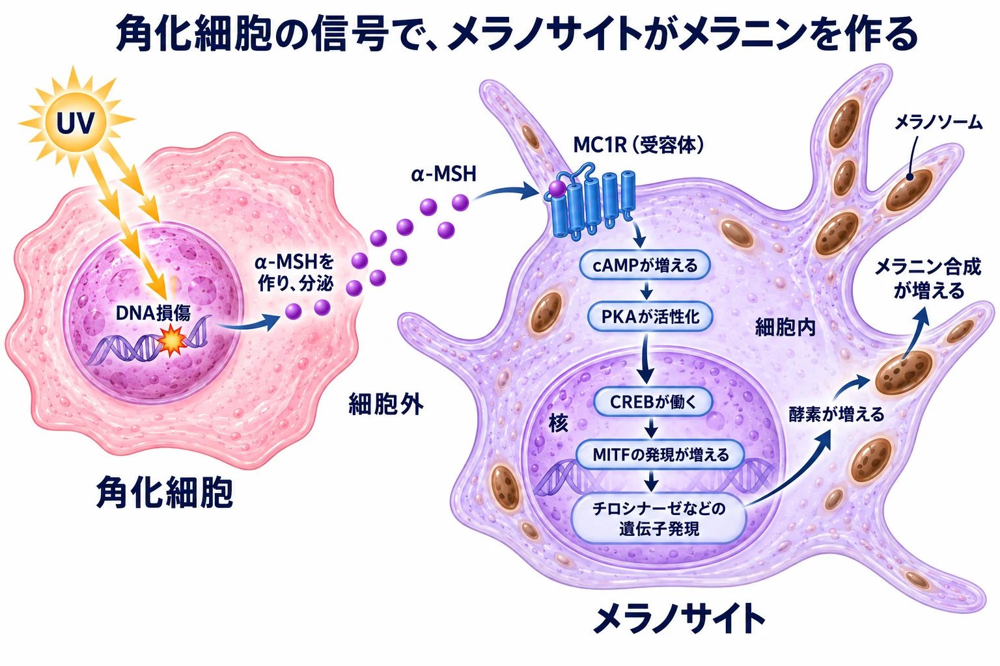

経路の解説
よく出会うシグナル伝達経路
最終更新 2026-10-27
経路の名前を見たときに、何に反応し、細胞の何を変えるのかを確認するためのページです。各分子の定義は用語集、詳しい機序や組織での働きは関連する章で扱います。
経路が活性化したというだけでは、望ましい効果かどうかは決まりません。どの細胞で、どの程度・どれくらい続くかによって、結果は変わります。
図と流れの矢印は、信号が伝わる代表的な順序を示します。分子が次の分子へ変わる化学反応ではありません。途中の分子や分岐は一部省略しています。
経路の一覧
| 経路 | 何に反応するか | 細胞の何を変えるか | 皮膚・美容での例 |
|---|---|---|---|
| PI3K–Akt–mTORC1 | インスリン・IGF-1などの成長刺激と、アミノ酸 | タンパク質などの合成を促し、オートファジーを抑える | 筋肥大、皮脂の合成、組織修復 |
| AMPK | ATPに対するAMP・ADPの増加 | ATPを作る反応を促し、ATPを使う合成を抑える | 運動、筋の代謝 |
| MAPK：ERK | EGFなどの成長因子 | 増殖・分化 | 表皮の更新、創傷治癒 |
| MAPK：JNK・p38 | 紫外線、酸化ストレス、炎症性サイトカイン | 炎症、AP-1を介したMMPの発現、生存・細胞死 | 紫外線によるECMの分解 |
| NF-κB | TNF・IL-1などの炎症性サイトカイン、微生物由来の刺激 | サイトカイン・ケモカインの産生 | 皮膚の炎症、老化細胞のSASP |
| Nrf2–Keap1 | 酸化ストレス、一部の反応性化合物 | 抗酸化・解毒の酵素の発現 | 紫外線への応答、抗酸化成分 |
| Wnt–β-catenin | Wntタンパク質 | 増殖・分化、組織の形成 | 毛包の形成と毛周期 |
| TGF-β–Smad | 活性型TGF-β | ECMの産生、分化 | コラーゲン産生、創傷治癒、瘢痕 |
| JAK–STAT | インターフェロン、一部のインターロイキン | 免疫・炎症に関わる遺伝子の発現 | 炎症性皮膚疾患、円形脱毛症 |
| cAMP–PKA | メラノサイトではα-MSH（MC1R）など | メラノサイトでは、メラニンを作る酵素の発現 | 紫外線後の色素形成、美白 |
1 合成とエネルギー：作るか、節約するか
細胞は、材料とエネルギーが足りているときに合成を進め、エネルギーが不足すると消費を抑えます。mTORC1は合成を進める側、AMPKは節約する側で、AMPKはmTORC1を抑えます。この二つは、カロリー制限や運動が老化にどう関わるかを考える研究でも中心になり、Longevityの文脈で注目されています（→ AMPKとmTORC1――エネルギーと材料の使い方を調節する・Hallmarks of Aging）。

PI3K–Akt–mTORC1
PI3Kは細胞膜のリン脂質に作用し、Aktが活性化される条件を作ります。Aktは複数の標的に作用し、その一つとしてmTORC1の活性化を促します。mTORC1は、成長刺激とアミノ酸の両方の情報を受けて合成を調節します。
タンパク質合成などが促され、オートファジーの開始が抑えられます。Aktには、mTORC1を介さない代謝や細胞生存への作用もあります。
必要な合成と、傷んだ成分の除去・更新を合わせて考える経路です。
関連する章：mTORC1――タンパク質合成を調節する仕組み・AMPKとmTORC1――エネルギーと材料の使い方を調節する・筋肉・皮脂分泌の生化学。
詳しく読む：成長刺激とアミノ酸は、違う経路からmTORC1へ伝わる
Aktは、mTORC1の上流にある抑制因子TSC複合体の働きを抑え、RhebによるmTORC1活性化を促します。一方、アミノ酸の情報はRagなどを介し、mTORC1がリソソーム表面でRhebと出会える状態を作ります。
mTORC1からオートファジー開始への抑制は、開始に関わる酵素ULK1のリン酸化などを介します。合成を促すことと、分解・再利用の開始を調節することが、同じ経路でつながっています（Kim et al., Nat Cell Biol., 2011：PMID 21258367）。
AMPK
AMPKは、絶食や運動などで細胞内のATPが減り、AMPやADPが相対的に増えると働きます。糖や脂肪酸の利用を促してATPを作り、脂質合成などATPを使う合成を止めます。
さらに、mTORC1を抑え、ULK1を介してオートファジーを促します。オートファジーで分解された細胞内の成分はアミノ酸や脂肪酸に戻り、エネルギー源にも、生きるのに必要な合成の材料にもなります。ミトコンドリアの品質管理にも関わります。
高め続けることを目標にするのではなく、エネルギー産生と修復・合成を調節する仕組みとして捉えます。
関連する章：代謝とATP・AMPKとmTORC1――エネルギーと材料の使い方を調節する・ミトコンドリア品質管理。
詳しく読む：AMPKからオートファジーへの二つの作用
AMPKはmTORC1を抑えることでオートファジーが始まりやすい状態を作るほか、ULK1を直接リン酸化して作用します。ULK1のどの部位をリン酸化するかによって、mTORC1とAMPKの作用は異なります（Kim et al., Nat Cell Biol., 2011：PMID 21258367）。
2 MAPK：同じ3段の連鎖を、成長とストレスで使い分ける
MAPKは一つの経路の名前ではなく、3段のkinaseが順にリン酸化を受け渡す連鎖の総称です。成長因子を受けるとERKへ、紫外線や炎症性サイトカインなどのストレスを受けるとJNK・p38へ伝わります。同じ刺激で複数が同時に働くこともあるため、論文で「MAPK」とあるときは、どの分子を指すかを確認します。

ERK
Raf・MEK・ERKは、リン酸化によって次の標的の働きを変える酵素です。ERKは核の転写因子にも作用し、遺伝子発現を調節します。
細胞の増殖や分化など。結果は細胞の種類や、ERKが働く強さ・時間によって変わります。
「ERKが活性化した」という測定結果から組織が望ましく再生したと判断するには、その後の細胞・組織の変化も確かめます。
関連する章：受容体と細胞内シグナル・表皮とターンオーバー・炎症と創傷治癒。
詳しく読む：ERKが働く時間で、応答が変わる
ERKの活性化時間と細胞の応答の関係は、PC12細胞の実験でも示されています。EGFによる一過性の応答と、NGFによる持続的な応答では分化の結果が異なりました。これは神経系の培養細胞での知見で、皮膚に同じ時間条件を当てはめるものではありません（Traverse et al., EMBO J., 1992：PMID 1334404）。
JNK・p38
JNKはc-Junをリン酸化します。c-Junは、複数のタンパク質が組んで働く転写因子AP-1の構成要素で、AP-1はMMPなどの遺伝子発現に関わります。p38も転写因子や細胞質の標的を介して、炎症性物質の産生やストレスへの応答を調節します。
炎症、ECMの分解、細胞の生存・細胞死。ヒト皮膚への紫外線照射で、ERK・JNK・p38の活性化とc-Junの増加が調べられています（Fisher et al., J Clin Invest., 1998：PMID 9502786）。
関連する章：酸化ストレスと抗酸化・細胞外基質（ECM）・線維芽細胞とコラーゲン・細胞死。
3 抑えが外れて働く転写因子：NF-κB・Nrf2・β-catenin
この3つの転写因子は、ふだんは働けない状態に保たれています。NF-κBはIκBに結合して細胞質にとどめられ、Nrf2とβ-cateninは作られてもすぐに分解されます。刺激によって抑えや分解が外れると、核に入って遺伝子発現を変えます。

NF-κB
NF-κBは、遺伝子の転写を調節するタンパク質群です。代表的な経路では、細胞質でIκBに結合して抑えられています。刺激によってIκBが分解されると、NF-κBが核へ移動して働きます。
サイトカインやケモカインなどの産生、細胞の生存や感染防御に関わる応答。炎症が必要な場面で働き、刺激が続くと慢性的な炎症にも関わります。
活性化を一律に悪い反応と捉えず、炎症の目的と持続を考えます。
詳しく読む：合成を調節する経路と、炎症性の分泌がつながる
老化細胞を用いた研究では、mTORがIL-1αの翻訳を支え、IL-1受容体からNF-κBへ伝わる信号を通じてSASPの維持に関わることが示されています。増殖を止めた細胞でも、合成と分泌は続き得ます（Laberge et al., Nat Cell Biol., 2015：原著論文）。
Nrf2–Keap1
Nrf2は転写因子、Keap1はその量を調節するタンパク質です。Keap1によるNrf2の分解制御は、細胞実験で示されています（Zhang et al., Mol Cell Biol., 2004：PMID 15572695）。
細胞自身の抗酸化・解毒能力。Nrf2がROSを直接消去するのではなく、グルタチオンの合成に関わる酵素など、防御に必要な分子の発現を増やします。
培養細胞でNrf2が活性化したという結果と、ヒトの皮膚で得られる効果は分けて読みます。
関連する章：酸化ストレスと抗酸化。
詳しく読む：Nrf2が核で結合する場所
Nrf2はsmall Mafなどと複合体を作り、標的遺伝子の調節領域にあるARE（antioxidant response element）を介して転写を調節します。初期のKeap1研究では、この転写応答の抑制が示されました（Itoh et al., Genes Dev., 1999：PMID 9887101）。
Wnt–β-catenin
Wntの刺激が乏しいとき、細胞質のβ-cateninは分解され、量が低く保たれます。Wntの刺激によって分解が抑えられると、β-cateninが蓄積し、核でTCF/LEFという転写因子とともに働きます。
細胞の増殖や分化、組織の形成・再生。マウスでは、皮膚のβ-cateninを欠損させると、毛包の形成や維持が妨げられました（Huelsken et al., Cell, 2001：PMID 11371349）。
どの細胞で、毛周期のどの時期に働くかが重要です。
関連する章：毛と毛包・メラノサイトと色素形成。
詳しく読む：β-cateninの分解を調節する仕組み
通常は、Axin・APC・GSK3・CK1などからなる複合体がβ-cateninのリン酸化を進め、分解へつなぎます。Wntを受けた受容体では、DishevelledやLRP5/6などを介してこの仕組みが調節され、β-cateninが分解されにくくなります。受容体LRP6のリン酸化とAxinの結合は、細胞実験などで調べられています（Zeng et al., Nature, 2005：PMID 16341017）。
4 受容体から核へ、一本道で伝わる：TGF-β・JAK–STAT・cAMP
受容体が受けた信号が、少数の分子を順に経て核へ届く経路です。
TGF-β–Smad
Smadは、受容体からの情報を核へ伝えるタンパク質です。線維芽細胞では、コラーゲンなどのECM産生を調節します。ヒト皮膚線維芽細胞で、Smad3を介したコラーゲン遺伝子の転写促進が示されています（Chen et al., J Invest Dermatol., 1999：PMID 9886263）。
ECMの産生・分解の調節、細胞の分化など。組織修復に必要な作用ですが、持続的な活性化は線維化にも関わります。
コラーゲンの量だけでなく、組織の構造や硬さ、分解との釣り合いを考えます。
関連する章：線維芽細胞とコラーゲン・細胞外基質（ECM）・炎症と創傷治癒。
詳しく読む：組織の硬さや張力も、応答に関わる
TGF-βへの応答には、周囲のECMや機械的な環境も関わります。線維芽細胞を用いた実験では、基材の条件や張力によって、TGF-βが筋線維芽細胞の指標であるα-SMAを誘導する程度が変わりました（Arora et al., Am J Pathol., 1999：PMID 10079265）。
JAK–STAT
JAKは受容体の細胞内側に結びつく酵素、STATは転写因子です。受容体ごとに、使うJAKとSTATの組み合わせが異なります。
免疫細胞や組織の細胞での、炎症・感染防御・増殖などの応答。
円形脱毛症の研究では、毛包を傷つけるT細胞と、IFN-γ・IL-15などのシグナルが注目され、マウスでのJAK阻害と少人数のヒトでの治療結果が報告されました（Xing et al., Nat Med., 2014：PMID 25129481）。
詳しく読む：JAKとSTATの組み合わせ
JAK群にはJAK1・JAK2・JAK3・TYK2があり、STATにも複数の種類があります。例えばIFN-γの受容体はJAK1・JAK2を使い、主にSTAT1へ信号を伝えます。STAT1がリン酸化を介して二量体を作る過程は、インターフェロンを用いた細胞実験で示されています（Shuai et al., Cell, 1994：PMID 7510216）。
cAMP–PKA
cAMP–PKAは多くの細胞で使われる経路です。ここではメラノサイトでのメラニン生成を例にします。
紫外線によるDNA損傷に応答した角化細胞がα-MSHを分泌し、メラノサイトが受け取ります。 受け取った後のcAMP–PKA経路は、メラノサイト内で働きます（Cuiら, 2007）。

α-MSHは細胞間で信号を運び、cAMPは受け取ったメラノサイトの内部で信号を伝えます。 cAMPは酵素PKAを活性化します。その信号が核内の転写因子CREBへ伝わるとMITFの発現が増え、MITFがチロシナーゼなどの遺伝子発現を促します。
メラニンを作る酵素が増え、メラニン生成が促されます。α-MSHとcAMPによる応答はヒトメラノサイトで、MITFを介する転写制御は細胞実験で調べられています（Im et al., Cancer Res., 1998：PMID 9426056、Bertolotto et al., J Cell Biol., 1998：PMID 9700169）。
受容体からの信号を調節すること、酵素の発現を変えること、できた酵素の活性を阻害することは、作用する段階が異なります。
関連する章：メラノサイトと色素形成・美白外用の生化学・しみとくすみ。
詳しく読む：同じcAMP–PKAでも、細胞によって結果が違う
cAMPはアデニル酸シクラーゼがATPから作り、phosphodiesterase（PDE）が分解します。受容体や作用先のタンパク質が異なるため、同じcAMP–PKAでも、メラノサイトでは色素生成、脂肪細胞では脂肪分解の調節などに関わります。
MITFの働きには、cAMP以外の経路も影響します。上の流れは、α-MSHからの代表的な順序です。